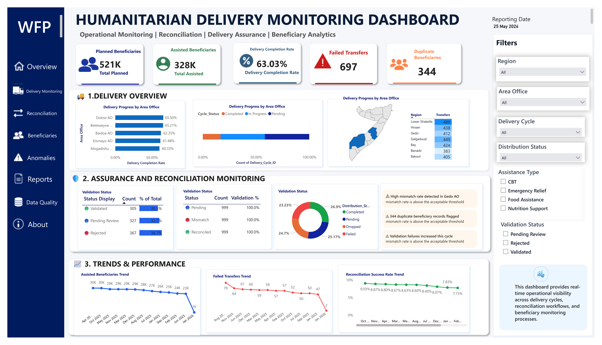
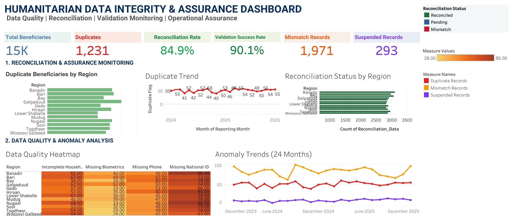

Supporting humanitarian decision-making through executive dashboards, delivery monitoring, beneficiary assurance, reconciliation analytics, and data quality solutions designed to transform operational data into actionable intelligence.
Executive reporting solutions designed to simulate humanitarian operational scenarios using responsible, synthetic demonstration datasets.

Executive dashboard providing operational visibility into beneficiary assistance delivery, transfer performance, delivery cycle execution, reconciliation activities, and performance trends.

Operational assurance dashboard focused on monitoring beneficiary data quality through reconciliation, duplicate detection, validation outcomes, and anomaly analysis.
Core analytical capabilities demonstrated through the featured solutions and informed by humanitarian operational contexts.
Monitoring assistance delivery execution, performance, and outcomes to support operational visibility and programme oversight.
Supporting validation activities and strengthening beneficiary integrity through structured analytical approaches.
Identifying mismatches, exceptions, and anomalies to improve accountability and operational controls.
Assessing completeness, consistency, and reliability of operational data to enhance confidence in reporting.
Transforming programme data into actionable insights that support evidence-based decision-making.
Developing decision-ready dashboards that communicate operational performance effectively.
A structured approach to transforming humanitarian operational data into meaningful insights.
Technologies and analytical techniques applied across humanitarian reporting and demonstration solutions.
Professional exposure informing the analytical perspectives reflected throughout this portfolio.
For collaboration, humanitarian analytics discussions, and knowledge exchange.